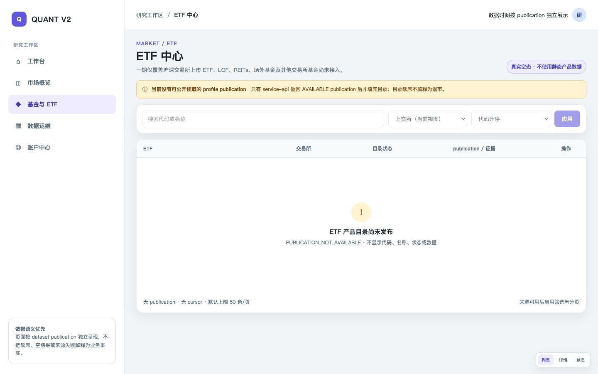
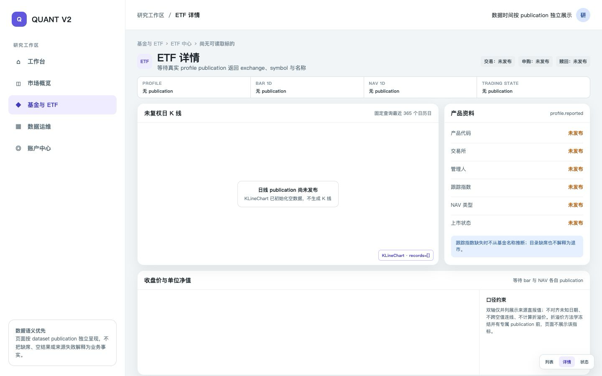
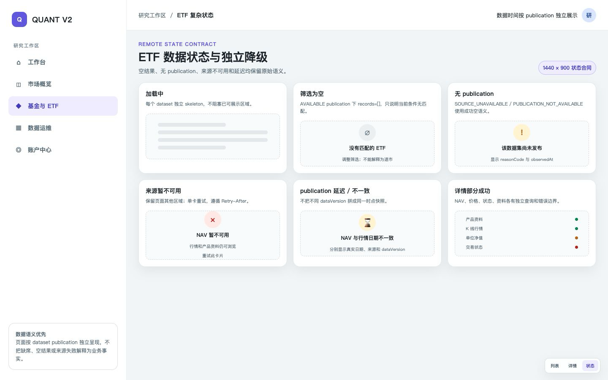

TECHNICAL SOLUTION · 0009
基金与 ETF 中心：跨 service-web、service-api、service-data-sync 技术方案
仓库现已打通“沪深交易所上市 ETF”的一期产品链路；场外公募基金、LOF、REITs、普通货币基金和其他交易所基金仍无完整能力。 因此一期产品范围严格收敛为 SSE/SZSE ETF。本方案既记录调研结论，也记录已落地的页面、公开 API、防腐客户端、真实来源同步、 canonical publication、质量门禁、控制面全量执行、恢复和跨服务合同。
1. 结论、目标与非目标
一期做什么
- 基金分类入口、ETF 目录、ETF 详情三个 PC 桌面页面。
- 产品身份、未复权日线、成交量/成交额、单位/累计 NAV、申购/赎回/交易状态。
- 逐 dataset 显示来源、publication、质量、观测时间和延迟。
-
K 线使用现有
KLineChart；NAV/价格比较使用ECharts。
一期明确不做
- 场外公募基金、LOF、REITs、货币基金与其他交易所基金产品页。
- 规模/AUM、份额、换手率、跟踪误差、资金流、成分/申赎清单、事件。
- 没有冻结方法学的折溢价；不使用 NAV 与价格临时计算。
- 移动端、响应式布局、暗色壳层、装饰渐变和实时行情。
DISABLED 变为 AVAILABLE。
2. 仓库现状证据
2.1 已实现的 ETF 数据路径
Tencent / Eastmoney
bar/nav
质量与来源证据
分页与游标
| dataset | 同步/存储 | typed 公开投影 v2 | 已落地运行语义 |
|---|---|---|---|
fund.etf.profile.reported |
产品资料 revision、当前目录快照、来源/release |
etfEntityRef、exchange、symbol、displayName、产品资料与 listingStatus
|
SSE/SZSE 官方目录按 endpoint 与来源类别显式识别；生命周期未披露时保持 UNKNOWN。 |
fund.etf.bar.1d.reported |
未复权 OHLC、volume、amount、币种、成交状态 | tradeDate、entityRef、OHLC、volume/volumeUnit、amount、currency、tradeStatus | Tencent 来源未复权日线；量按股、额按人民币元保存并公开来源与质量。 |
fund.etf.nav.1d.reported |
UNIT / ACCUMULATED、NAV、币种、finality | navDate、entityRef、navKind、nav、currency、finality | Eastmoney 来源 UNIT/ACCUMULATED NAV；终态未披露时为 UNKNOWN；不冒充 IOPV。 |
fund.etf.trading_state.reported |
TRADING / SUBSCRIPTION / REDEMPTION 独立状态 | entityRef、stateDimension、state、effectiveFrom/effectiveTo、reason | Eastmoney 只发布来源报告的申购/赎回维度；缺少可信 TRADING 时该维度保持无记录。 |
2.2 来源、publication 与质量事实
-
一期来源：目录来自 SSE 官方当前基金列表的显式
CATEGORY=F100ETF 范围，以及 SZSE 基金列表中的显式 ETF 类别；日线来自 Tencent；NAV 与申购/赎回状态来自 Eastmoney。 -
2026-07-30 真实来源探测：SSE 官方当前列表返回 908 行 ETF，其中
24 行由官方分类为
F150 / 交易型货币基金；该目录还直报上市日、管理人与标的指数。旧的按日期 ETF 份额接口不再承担产品目录职责，避免“当天份额尚未发布”阻塞产品同步；目录空响应仍失败关闭。 -
2026-07-30 真实来源探测：SZSE 官方工作簿共 1,016 行，按来源字段
基金类别=ETF精确取得 704 行；285 行 LOF 与 27 行不动产基金均被排除。 首条 ETF159001由来源直报投资类别=货币市场基金， 该值只保存为etfType，不扩展成普通货币基金能力。 -
DATA_SYNC_AKSHARE_ENABLED=true才启用；默认关闭，且当前没有外部再分发授权或生产 SLO。本方案因此冻结为已认证内部产品环境，不把外部分发作为一期前提。 -
当前写入通常没有可信
sourcePublishedAt，以OBSERVED_ONLY和系统publicUsableAt保留保守时间语义。 -
合法空集以
availability=EMPTY返回；没有 publication 时以 HTTP 200、SOURCE_UNAVAILABLE + PUBLICATION_NOT_AVAILABLE返回且不提供dataVersion，两者都不冒充业务事实。 -
四个 ETF dataset 已登记到统一数据运维目录并注册 canonical
executor。profile 支持单交易所兼容模式与
ALL_VENUES双市场模式；bar/NAV/state 支持单 ETF 与冻结双 profile publication 的ALL_ETFS全量 fan-out。旧data-sync-etfCLI 继续拒绝执行，避免绕过控制面。
2.3 Web 与 API 现状
service-web
已实现 /market/funds、/market/etfs
与 /market/etfs/:exchange/:symbol。页面只经认证
service-api POST 读取真实 publication；KLineChart 与 ECharts
分别承载 K 线和非 K 线分析。
service-api
POST /api/v1/market-data/query 已增加 ETF v2
请求与逐 dataset record 判别式校验、2 MiB
响应上限、内容类型/UTF-8/请求绑定检查及
private, no-store。
3. 基金类型能力矩阵
“支持”按可建立可靠身份、同步、publication 与公开读取的完整链路判断，不以通用实体表或调研文档代替产品能力。
| 基金类型 | 身份/模型 | 同步与 publication | 公开读取 | 本方案判定 | 后续新增能力 |
|---|---|---|---|---|---|
| 交易所上市 ETF | ETF listing、profile、bar、NAV、state 已有；tracking/share/action/premium 仅有模型脚手架。 | 四条同步、真实来源、availability、canonical executor、双市场/全 ETF 调度与 publication 已实现。 | 四个 v2 typed reader 经认证 service-api 公开；只读 CURRENT publication。 |
一期唯一范围 真实链路已实现。 |
后续再补 tracking、份额/规模、PCF、事件及冻结方法学的派生 dataset。 |
| 场外公募基金 | 通用 FundLegalEntity/ShareClass 脚手架；没有完整普通基金领域模型。 | 只有 NAV 候选来源调研；没有生产表、迁移、任务和 publication。 | 无。 | 后续阶段 | 基金/份额身份、开放状态、NAV/累计 NAV、申赎、分红、费用、管理人、规模与独立合同。 |
| LOF | 没有 LOF 明确分类和双场景身份语义。 | 无专属同步。 | 无。 | 当前不支持 | 上市交易 + 场外申赎双身份、跨市场价格/NAV、转托管与状态口径。 |
| REITs | 既有 ETF 方案明确排除；没有 REITs 基金产品模型。 | 无专属同步。 | 无。 | 当前不支持 | REITs 身份、底层资产/运营指标、分派、扩募与交易事件独立领域。 |
| 货币基金 |
没有普通货币基金万份收益/七日年化模型。深交所目录会为部分已明确归入
ETF 的产品直报
etfType=货币市场基金，但当前没有跨场所统一分类枚举或覆盖率承诺。
|
无普通货币基金同步；来源直报为货币市场基金的交易所 ETF 仍属于 ETF 一期， 不得据此开放普通货币基金中心或宣称类型筛选完整。 | 普通货币基金无；交易所货币 ETF 的 profile/bar/state 可独立读取，收益型 NAV 明确返回 CURRENTLY_UNSUPPORTED。 | 普通货币基金当前不支持 | 普通货币基金仍需万份收益、七日年化、收益结转与申赎状态；ETF 类型筛选还需冻结 SSE/SZSE 一致分类映射和覆盖率。 |
| 其他交易所基金 | 封闭式基金等没有专属产品分类、生命周期和数据语义。 | 无。 | 无。 | 当前不支持 | 按资产类型分别建模；禁止用代码前缀或 ETF 目录兜底归类。 |
/market/funds 入口已经存在就提前展示空壳详情页。
4. ETF 数据字段与来源矩阵
| 数据项 | 判定 | 现有字段/来源 | publication / 质量 / 更新时间 | 一期展示或缺口 |
|---|---|---|---|---|
| ETF 产品目录 | A | profile v2 公开 identity、exchange、symbol、displayName、产品资料与 listingStatus；SSE/SZSE 官方目录。 | 按交易所形成独立不可变 publication；目录观察不等于完整生命周期历史。 | 一期列表只以单交易所 publication 分页；不得把缺席解释为退市。 |
| 交易所 / 代码 | A | EtfIdentifier 限 SSE/SZSE + 6 位代码。 |
venue 来自 SSE/SZSE 专属 endpoint；代码只做格式校验，不参与类别或场所推断。 | 来源身份与场所 100% 可解释才发布。 |
| 名称 | A |
profile v2 的 displayName 来自官方目录并随
revision 保存。
|
随 profile publication 发布；空名称阻断 publication。 | 用于列表、搜索和详情标题；不从代码或其他证券目录补齐。 |
| 上市状态 / 日期 | A（模式） | profile v2 公开 listingStatus、listedOn、delistedOn。 | 当前官方目录未给出可靠生命周期结论，适配器诚实发布 UNKNOWN；目录缺席不更新 DELISTED。 | 表格显示“状态未披露”，一期不提供状态筛选；未来有来源证据后再开放。 |
| 交易、申购、赎回状态 | A（结构） | 三维独立状态模型/reader；当前 NAV 来源仅能形成申购/赎回。 | 逐状态 effectiveFrom；交易状态实际来源缺失。 | 三枚独立状态；缺一不补全、不从成交量推断停牌。 |
| ETF 日线 OHLC | A | bar v2 公开未复权 OHLC 与 adjustment=UNADJUSTED。 | 腾讯未复权日线；真实 ETF 代码已验证，质量规则已有 OHLC 约束。 | KLineChart 直接消费来源日线；明确 UNADJUSTED。 |
| 成交量 / 成交额 | A | bar v2 同时公开 volume、volumeUnit、amount、currency。 | 随 bar publication；单位不能丢失。 | bar v2 同时公开 volumeUnit、amount、currency；不可混单位。 |
| 单位净值、净值日期、NAV 类型 | A（普通 ETF） E（货币收益语义） | nav v2 公开 UNIT / ACCUMULATED、navDate、nav、finality、currency。 | 来源常无精确公告时刻，当前 finality 多为 UNKNOWN；收益型货币 ETF 净值不能映射成 UNIT/ACCUMULATED。 | 普通 ETF 公开 currency/finality；IOPV 不混入 NAV。货币收益语义返回 CURRENTLY_UNSUPPORTED，不显示或伪造单位净值。 |
| 跟踪指数 | B | TrackingRelationVersion 模型存在，无同步/发布/reader。 | 无 publication。 | 一期显示“未发布”；禁止从 ETF 名称猜指数。 |
| 基金管理人 / 托管人 | A（可空） | profile v2 公开 managerName/custodianName，值只取官方目录直报。 | 随 profile publication；来源未给出时为 null，不跨来源补齐。 | 有值时展示，否则明确“未披露”。 |
| 基金份额 | B | EtfShareRevision 模型存在；上交所/深交所目录候选来源包含统计日份额，但当前无同步/发布/reader。 | 无 publication。 | 一期 profile adapter 明确忽略该列；后续新增日份额 reported dataset 后才展示。 |
| 基金规模 / AUM | D | 无 AUM 事实。 | 无来源、日期和方法学。 | 一期不展示；不临时用 NAV × 份额推导。 |
| 折溢价率 | B 模型 E 一期 | PremiumRevision 脚手架存在，无同步、发布、reader 和冻结公式。 | 交易日对齐、NAV 类型、时点和零值语义未冻结。 | 不计算、不展示；未来独立 derived publication。 |
| 换手率 | D | 无直接字段；份额分母也未发布。 | 口径/单位/日期未冻结。 | 一期不展示；未来 reported 或独立 derived 方法学。 |
| ETF 资金流 | D E 一期 | 无 ETF 专属流量 dataset；“份额变化”“成交资金”“申赎净额”语义不同。 | 无来源、方法学和 publication。 | 先冻结业务定义；不得复用股票资金流或份额变化冒充。 |
| ETF 成分 / 申赎清单 | D | 无 PCF/creation basket 模型、同步或 reader。 | 无 publication；时效和权利要求更高。 | 一期不展示；未来独立成分/现金替代/单位契约。 |
| 分红、拆分等事件 | B | EtfActionVersion 模型存在，无同步/发布/reader。 | 无 publication。 | 一期不展示；不能从价格跳变推断。 |
| 来源、publication、质量、更新时间 | A | 响应 meta 有 dataVersion、publishedAt、knowledgeCutoff、publicUsableAt、sources、quality、coverage、warnings。 | 每个 dataset 独立；sourcePublishedAt 可能为空。 | 页面逐卡展示，不合并成单一“更新时间”。 |
结论：现有字段中没有一期可安全新增展示的业务派生指标。仅有 UI 层格式化（交易所名称、日期/数值格式、状态文案）属于安全派生；任何比例、规模、资金流或生命周期事实均不能由现有字段临时推断。
5. 信息架构、路由与信息优先级
/market/funds
基金分类入口。 首屏解释覆盖边界；ETF 卡可进入，其他五类显示“尚未接入”，不显示伪造数量、收益或规模。
/market/etfs
ETF 产品目录。 一期交易所为必选维度，默认 SSE；切换 SSE/SZSE 重置 cursor，避免跨 publication 合并分页。
/market/etfs/:exchange/:symbol
ETF 详情。 URL 使用规范大写
SSE|SZSE，小写或其他值 fail-closed；绝不从 symbol
推断场所。
5.1 为什么 ETF 独立于股票中心
ETF 与股票共享交易所行情形态，但身份、NAV、申赎状态、管理人、跟踪关系、申赎清单和折溢价方法学完全不同。复用 AppShell、筛选控件、KLineChart 容器和远程状态组件；不复用股票领域 DTO、公司资料或股票资金流语义。
5.2 ETF 列表：真实筛选和排序
| 维度 | 一期设计 | 启用条件 | 明确不支持 |
|---|---|---|---|
| 交易所 | 必选 SSE 或 SZSE；URL exchange=SSE。 |
来源显式 venue；单交易所 profile publication。 | “全部交易所”跨 cursor 合并。 |
| 代码/名称搜索 | symbol 精确/前缀；displayName 包含。 | profile v2 名称字段、filter 合同与索引。 | 用代码前缀分类基金。 |
| 上市状态 | 来源报告的 LISTED/DELISTED/UNKNOWN；默认不筛。 | 生命周期证据合格并支持 filter。 | 目录缺席推断 DELISTED。 |
| 排序 | symbol、displayName 升/降序；稳定次键 entityRef。 | descriptor 明确 sortable，服务端 cursor 绑定排序。 | 价格、涨跌、规模、折溢价、资金流、换手率排序。 |
5.3 ETF 详情信息优先级
- 身份与来源：名称、exchange、symbol、目录/上市状态、profile publication。
- 三个状态：交易、申购、赎回独立展示；缺失保持“未发布”。
- 未复权日线：OHLC、成交量、成交额，KLineChart；不把停牌从零成交量推断。
- NAV 与价格：ECharts 双轴并列来源直报值；分别标日期、类型、finality、publication，不计算折溢价。
- 产品资料：管理人、托管人、跟踪指数仅在字段有 publication 时展示；缺失有明确占位。
- 后续模块：份额/规模、事件、资金流、PCF、折溢价全部隐藏，不用 disabled 数字卡占位。
跟踪指数缺失时显示“跟踪指数未发布”，不从产品名拆词、不链接相似指数。多个 publication 日期不一致时，在详情顶部给出分区时间条，并在比较图旁显示“日期不一致”；不阻断已可用内容。
6. typed market-data 查询适配设计
6.1 当前能力与 v2 契约策略
已保留 POST /api/v1/market-data/query，没有新增 ETF
聚合 endpoint。service-web 的 ETF API adapter
把页面意图映射到四个固定 dataset；service-api
在同一路由执行请求约束、dataset 判别式 Zod
响应校验与请求/响应绑定。 schemaVersion 1 保持兼容，ETF 页面只请求
schemaVersion 2。
| dataset v2 | 相对 v1 必需新增公开字段 | 查询约束 |
|---|---|---|
fund.etf.profile.reported |
displayName、listedOn、delistedOn、managerName、custodianName、etfType、数据来源精度。 | exchange 必须 EQ 单值；symbol/name/status 可过滤；symbol/name 可排序。当前 Web 不开放缺少真实值的状态筛选。 |
fund.etf.bar.1d.reported |
open、high、low、amount、volumeUnit、currency、tradeStatus。 | exact entityRef + TRADE_DATE；一期最多 366 根，UNADJUSTED。 |
fund.etf.nav.1d.reported |
currency、finality、sourcePublishedAt（可空）。 | exact entityRef + NAV date；UNIT/ACCUMULATED 显式筛选。 |
fund.etf.trading_state.reported |
effectiveTo、reason（有来源才填）。 | exact entityRef；三个 stateDimension 独立记录。 |
6.2 列表查询适配
{
"dataset": { "code": "fund.etf.profile.reported", "schemaVersion": 2 },
"businessScope": "ETF",
"time": { "dimension": "EFFECTIVE_AT", "from": "2026-07-30", "to": "2026-07-30" },
"visibility": { "mode": "CURRENT" },
"selection": { "qualityStatuses": ["PASSED", "WARNED"] },
"fields": ["etfEntityRef", "exchange", "symbol", "displayName", "listingStatus"],
"filters": [
{ "field": "exchange", "operator": "EQ", "values": ["SSE"] }
],
"sort": [
{ "field": "symbol", "direction": "ASC" }
],
"page": { "limit": 50 }
}上述 v2 形态已同步到版本化 YAML、descriptor、service-api Zod、service-web Zod 与合同测试。Web 仅开放交易所、代码前缀、 名称包含和 symbol/displayName 排序；listingStatus 虽有 typed filter，但当前官方目录只诚实报告 UNKNOWN，因此不在页面开放。
6.3 详情查询编排
-
用 exchange + symbol 查询 profile，取得稳定
etfEntityRef；不在 Web 生成内部 UUID。 - profile 成功后并行发起 bar、NAV、trading_state 三个 query；每个请求独立 AbortSignal、重试与 error boundary。
-
每个响应保留自己的
meta.release；适配层不得生成虚构的综合 dataVersion。 -
尚未产生 publication 返回
200 + SOURCE_UNAVAILABLE + PUBLICATION_NOT_AVAILABLE + records=[]；来源确认的合法空窗口返回200 + EMPTY + records=[]；筛选无匹配是200 + AVAILABLE + records=[]，三者文案不同。 -
货币市场 ETF 的收益型 NAV 不能安全映射到冻结合同，返回
200 + CURRENTLY_UNSUPPORTED + NAV_SEMANTICS_UNSUPPORTED_MONEY_MARKET； 该状态只降级 NAV 区域，行情、资料和状态继续独立展示。
query keys
['market-data','etf','profiles',filters]['market-data','etf','profile',exchange,symbol]
query keys
['market-data','etf','bars',entityRef]['market-data','etf','navs'|'states',entityRef]
合并规则
只合并 UI 布局，不合并 publication。日期不一致只提示，不前向填充或对齐未知交易日。
7. 跨服务责任边界与缺口总览
| 层 | 权威职责 | 允许依赖 | 禁止事项 | 一期主要交付 |
|---|---|---|---|---|
| service-data-sync | 来源、身份、标准化、revision、质量、publication、typed reader、控制面执行。 | Provider adapter、PostgreSQL、对象存储、统一数据运维控制面。 | 让 API/Web 直连数据库或 Provider；从代码前缀、目录差异或价格跳变推断事实。 | 四 dataset v2、ETF executor、来源/身份修复、回放/补数/健康检查。 |
| service-api | 认证公开 POST、请求/响应合同、防腐客户端、超时、错误和数据最小化。 | 仅通过内部版本化 POST 调用 data-sync。 | 访问 data-sync 存储；临算折溢价/规模；把不同 publication 聚合成一份“详情快照”。 | ETF v2 判别式 Zod、allowlist、Problem Details、限流/指标/合同测试。 |
| service-web | 路由、页面状态、可访问交互、URL、缓存和图表生命周期。 | 仅调用 service-api。 | 拼 Provider 字段、生成内部 UUID、猜 ETF 类型/交易所、把缺失渲染为零。 | 基金入口、ETF 目录/详情、四查询状态与 KLineChart/ECharts。 |
7.1 service-web
- 新增三条路由、导航分组和页面级 lazy boundary；基金入口只呈现真实分类能力。
- 新增 ETF dataset 判别式 Zod schema、adapter、formatters、TanStack Query hooks 与独立错误边界。
- 复用 AppShell、设计 token、KLineChart 与 ECharts；不得复制股票领域 DTO 或访问 data-sync/第三方来源。
- 增加列表 URL 状态、cursor 失效恢复、键盘表格行、图表替代摘要、空/错/延迟状态测试。
7.2 service-api
- 现有通用 POST endpoint 可承载一期，不需要新 HTTP 方法；所有业务与运维应用路由继续只用 POST。
- 通用 envelope 后按 dataset/schemaVersion 严格解析 ETF v2 records，字段投影、dataVersion、sourceRef 与请求绑定任一漂移即拒绝。
- 保留 data-sync 的 availability、warnings、coverage、dataVersion 与 opaque cursor，不把无 publication 改写成 404。
- 已实现字段白名单、limit/2 MiB 响应上限、硬超时、409/429/503 映射和合同测试；API 不直连同步服务数据库。
- 一期部署范围固定为已有认证边界内的内部产品；API 不提供外部分发。未来扩大受众时另加 entitlement，不改变本期合同。
7.3 service-data-sync
| 原缺口 | 实施前风险 | 已落地修复/验收证据 |
|---|---|---|
| 显式身份 | 用代码前缀猜 SSE/SZSE。 | 交易所专属 endpoint 直接给 venue；所有发布记录 identity provenance 可追溯，前缀推断计数为 0。 |
| 名称与生命周期 | 名称被丢弃；默认 LISTED；目录缺席语义不安全。 | displayName 进入 revision/v2；生命周期无证据时为 UNKNOWN；snapshot diff 不产生 DELISTED。 |
| 公开字段 v2 | 存储有 OHLC/amount/finality 等，reader v1 不暴露。 | 四个 descriptor v2、查询实现、OpenAPI/YAML 与跨服务合同测试一致。 |
| 状态来源 | 没有可信 TRADING 状态；申赎来自 NAV 页面。 | 来源维度明确；缺失返回未发布，不从成交量/NAV 猜状态。 |
| 来源与权利 | AKShare 默认关闭；聚合库许可证不等于上游再分发权。 | 一期 DataSource 用途固定为认证内部使用，外部分发配置 fail-closed；允许字段和来源证据随 release 保存，连续性探针待积累真实 publication 基线后新增。 |
| 更新时间 | 单 venue 计划无法同时维护 SSE/SZSE；sourcePublishedAt 多为空。 |
profile ALL_VENUES 一条计划生成双
publication；后三类在 fire-time
冻结双版本与全集；公告时间未知仍为 OBSERVED_ONLY。
|
| 模型但无产品链路 | tracking/share/action/premium 仅模型存在，易被误认为可用。 | 一期明确隐藏；后续必须补 source→sync→release→reader→contract 全链路。 |
7.4 同步、恢复与数据质量
- 分区：profile 按交易所 + 观察日；bar/NAV/state 按 ETF identity + 精确日期窗口，空观测不能跨窗口复用。
- 幂等：同内容重放复用不可变 release；变更追加 revision 并关闭旧 known_to，不原地覆盖历史。
- 恢复：按原分区重跑；异常原始 payload 归档用于排障；回滚消费端到前一 dataVersion，不删除 revision。
- 质量：identity 全可解释、OHLC 约束、日期唯一、volume/amount 单位齐全、NAV 类型/finality 显式、状态维度不串用。
- 可观测：按 dataset 记录成功/空/来源不可用、记录数、质量状态、publishedAt/publicUsableAt、延迟与 source schema 漂移。
7.5 不等待人工数据的实施关键路径
- 合同已冻结：ADR、YAML、四个 descriptor v2 与 data-sync/service-api/service-web schema 使用同一字段和失败语义。
- 控制面已可执行：显式 venue/名称、四个 ETF executor、迁移、双市场/全量调度、质量门禁和断点恢复均由受支持入口完成。
- 真实 publication：先从 SSE/SZSE 官方目录建立 entityRef，再由冻结全集 fan-out bar/NAV/state；不允许人工插表或静态清单。
- 公开同一 publication：service-api 严格验证内部 typed response，逐字段保留 release/cursor/availability；不引入聚合计算。
- Web 只接真实 API：列表读取真实 profile，详情用其 entityRef 查询三类数据；无 publication 就显示可观测空态。
docs/decisions/0026-etf-center-typed-market-data-boundary.md，并同步更新
docs/contracts/data-sync-market-data-v1.yaml
与数据运维 0022/0023 OpenAPI；实现不再依赖未评审的隐式合同。
8. service-api 可执行技术方案
完整独立方案：service-api.html。一期复用既有认证公开入口
POST /api/v1/market-data/query，不增加 ETF
聚合路由、不增加数据库模型或 Redis 业务缓存。
公开能力卡
- Actor：已通过 service-api 全局认证的 QUANT V2 用户。
- Consumer：service-web ETF adapter；浏览器不接触内部地址/令牌。
- Owner：API 负责认证、合同、限流、错误；data-sync 负责事实与 publication。
- 兼容：v1 不改；ETF 新字段只走 schemaVersion 2。
唯一依赖链
Web adapter → 公开 POST →
MarketDataAccessService →
MarketDataAccessClient → 内部
POST /internal/v1/market-data/query → typed
reader。
禁止 API 访问同步库、Provider，或把四个 release 合成一个虚构 dataVersion。
8.1 合同、校验与失败
| 设计点 | 冻结实现 | 验收 |
|---|---|---|
| ETF v2 record | 在通用 envelope 校验后，以 dataset + schemaVersion 判别 profile/bar/NAV/state 严格 Zod；未知字段 fail-closed。 | 公开 records 与内部 typed reader 逐字段一致；单位、空值和枚举不改写。 |
| 请求白名单 | descriptor 控制 fields/filter/sort；列表 limit ≤ 50，bar/NAV ≤ 366；exact entityRef。 | 未知 dataset/版本/字段/排序、裸 symbol 历史查询均返回 400。 |
| availability | AVAILABLE、SOURCE_UNAVAILABLE、EMPTY、CURRENTLY_UNSUPPORTED 维持成功响应语义；无 publication 或明确不支持均不改为 404。 | 无 publication 时 records=[] 且 release 不含 dataVersion；筛选空结果仍是 AVAILABLE；明确不支持必须 records=[]、pitCoverage=UNKNOWN 并给稳定 reason。 |
| 错误 | 400/422→400，404→404，cursor/snapshot→409，rate limit→429 + Retry-After，其他/超时/合同漂移→503。 | Problem Details 不泄露 provider、堆栈、内部令牌；requestId 可关联。 |
| 可靠性 | 只读 POST 不要求 Idempotency-Key；dataVersion/cursor 定义重复读取边界；不新增业务缓存。 | publication 不变时查询可重复；变化后旧 cursor 明确 409。 |
9. service-data-sync 可执行技术方案
完整独立方案：service-data-sync.html。 实现已把原先“模型/同步服务存在但没有受支持执行入口”的缺口修复为统一控制面可调度、可回填、可恢复的真实数据链。
9.1 冻结真实来源
| dataset | 真实来源 | 身份/语义门禁 | 不做的推断 |
|---|---|---|---|
| profile | SSE 官方当前基金列表（显式 ETF 根分类）与 SZSE 官方基金列表；provider-neutral adapter 直接保留 endpoint 和来源证据。 | SSE 按官方 ETF 根分类及分类树验收，SZSE 按来源显式基金类别筛 ETF；代码、简称、 观察日入 canonical；venue 由 endpoint 固定。 | 不看代码首位；不把 REITs/LOF/其他基金纳入；目录缺席不写 DELISTED。 |
| bar | 腾讯 ETF 日线 adapter；由已发布 exchange + symbol 构造来源标识。 | 只接受 profile publication 的 entityRef；一期固定 UNADJUSTED；OHLC/量额/单位完整。 | 不从零成交量推停牌；不制造 latest quote。 |
| NAV | 东财净值 JSON adapter；按字段键解析并保留来源 schema 指纹。 | UNIT/ACCUMULATED 显式；currency/finality 可追溯；公告时刻未知则 OBSERVED_ONLY。 | 不把 IOPV 当 NAV；不与收盘价计算折溢价。 |
| state | 同一资料来源明确报告的申购/赎回状态。 | 只发布实际返回维度；TRADING 没有可信来源时合法缺失。 | 不根据成交或 K 线缺口补造交易状态。 |
9.2 控制面、分区与调度
-
register_canonical_executors已注册四个 canonical executor；旧 ETF CLI 继续拒绝，统一控制面是唯一入口。 -
profile MASTER 支持兼容单 venue 与显式
ALL_VENUES；后者只枚举 SSE、SZSE 两分区并分别产生 publication。 -
bar/NAV/state 的
ALL_ETFS预检冻结精确 SSE/SZSE profile dataVersion、全集数量、SHA-256 和日期窗；提交只复用预检 target。 - 全集包含 LISTED、SUSPENDED、UNKNOWN，只排除来源明确 DELISTED；每个 ETF 是独立 fenced partition，成功、失败、取消与重试均保留 checkpoint。
-
自动计划复用现有 Data Operations scheduler：profile 一条
ALL_VENUES计划，后三类在 fire-time 冻结最新双 publication 与全集；冻结失败则 REJECTED，不创建空 run。 -
合法 EMPTY 完成分区；来源明确的货币收益 NAV 口径以
CURRENTLY_UNSUPPORTED + NAV_SEMANTICS_UNSUPPORTED_MONEY_MARKET完成可审计 unsupported 分区并继续其他 ETF；SOURCE_UNAVAILABLE 失败分区；未知 schema/系统性错误 fail-closed 并保留 evidence，错误 release 不切 current、不删历史 revision。
9.3 质量与可观测门禁
Profile
venue provenance 100%；displayName 非空；SZSE 类别明确 ETF；重复为 0。当前实现尚未配置“最近 20 次中位数 80%”连续性门禁；该阈值只能在积累真实 publication 基线后另行评审，不能写成已上线能力。
Bar / NAV
OHLC 约束、日期唯一、量额非负、单位齐全；NAV 正数、类型/币种/finality 显式；无来源发布时间不伪造。
State / Evidence
状态维度枚举隔离；部分维度合法。每批保存 raw hash、observedAt、attemptId、拒绝计数、quality、publication age。
10. NAV、价格、状态、行情独立失败与远程状态
| 状态 | 判别依据 | 页面表现 | 禁止行为 |
|---|---|---|---|
| 加载中 | 该 query 首次 pending。 | 仅该卡 skeleton；已有资料不被遮挡。 | 全页 spinner。 |
| 筛选空结果 | availability=AVAILABLE 且 records=[]。 | “当前条件无匹配”，保留筛选和清除操作。 | 显示“已退市”或“来源失败”。 |
| 无 publication | SOURCE_UNAVAILABLE + PUBLICATION_NOT_AVAILABLE。 | “该数据集尚未发布”，显示 reasonCode/observedAt（有则显示）。 | 用零值或其他 dataset 补齐。 |
| 来源不可用 | SOURCE_UNAVAILABLE + provider reason。 | 单卡错误、重试、Retry-After；其他卡继续。 | 把来源失败当空业务事实。 |
| 合法空数据 | EMPTY + no_matching_facts。 | “最近 365 日暂无记录”，保持固定窗口和来源空集证据。 | 推断未上市/停牌/无 NAV。 |
| 当前口径不支持 | CURRENTLY_UNSUPPORTED + NAV_SEMANTICS_UNSUPPORTED_MONEY_MARKET。 | “该 ETF 为货币收益口径，当前不按普通单位 NAV 展示”；行情和状态继续。 | 过滤 NAVTYPE=0 后冒充单位 NAV，或把它解释为来源故障。 |
| publication 延迟 | publishedAt/publicUsableAt 超过产品新鲜度阈值。 | 黄色延迟标识和最后观测时间；仍允许看历史。 | 隐藏延迟或展示“实时”。 |
| 多 publication 不一致 | bar、NAV、state 日期/dataVersion 不同。 | 顶部四格时间条；比较图标注较早 dataset。 | 生成综合 dataVersion、前向填充或计算折溢价。 |
| cursor 失效 | 409 / fingerprint、publication 改变，或带 cursor 的 400 validation-error。 | 清除 cursor 回第一页，保留筛选并提示“目录已更新”。 | 反复重试旧 cursor。 |
| 429 / 503 | 公开 Problem Details。 | 遵循 Retry-After；无自动重试风暴；支持手动重试。 | 泄露内部 provider/凭据/堆栈。 |
10.1 页面依赖关系
bar.1d 最后一根可用
close，因此一期不做独立价格卡：价格与 K 线共享 bar
query、publication
和失败状态。若未来要求价格与历史行情拥有独立新鲜度和失败边界，必须新增版本化
quote/snapshot 数据集，不能在 Web 层把同一 bar
查询伪装成两个来源。
Profile 首次失败
无法解析 entityRef 时，只显示路由身份和 profile 错误；bar/NAV/state 不发请求。若存在同路由已验证缓存，可标“旧资料”并继续各自请求。
详情部分成功
bar、NAV、state 任一失败只影响对应卡。价格与 NAV 比较依赖两者同时 AVAILABLE；否则展示各自单图/空态，不降级计算。
11. 性能、分页、缓存、URL 与图表状态
11.1 分页与 URL
- 列表默认 50 行；Web 永不请求超过 50，内部 reader 既有硬上限 500 不作为 UI 页大小。
-
URL：
?exchange=SZSE&q=ETF&sort=displayName&order=desc&cursor=…&page=2；默认 SSE/symbol/asc 被省略，交易所、关键词或排序变化清 cursor。 -
当前官方目录不报告可靠生命周期状态，因此 Web 丢弃
listingStatusURL 参数并且不展示状态筛选；typed reader 保留该过滤能力供未来可靠来源使用。 - 详情 URL route params 是唯一分享身份；一期固定读取最近 365 个日历日，不接受尚未实现的 range/panel 参数。
- opaque cursor 可以进 URL，但 publication 更新后允许失效；页面按 409 明确回第一页，不把 cursor 解码成页码。
11.2 缓存与并发
| 对象 | 浏览器缓存建议 | 失效键 | 服务端策略 |
|---|---|---|---|
| profile 列表/详情 | staleTime 60 秒；列表切换筛选/游标时保留上一份已校验数据。 | 列表：完整 filters；详情：exchange、symbol。 |
private, no-store；service-api
不聚合或缓存业务数据，dataVersion/cursor 原样转发。
|
| bar / NAV | staleTime 5 分钟；路由或身份变化通过 AbortSignal 取消旧请求。 | dataset、entityRef；窗口固定为最近 365 个日历日，NAV 固定 UNIT。 | 不在 API 合并缓存；typed reader publication 是权威。 |
| state | staleTime 60 秒；与 bar/NAV 独立请求、独立重试。 | dataset、entityRef；固定查询最近 365 日来源报告值。 | 不以 profile 或成交量补造 TRADING/SUBSCRIPTION/REDEMPTION。 |
| 错误 | 共享 QueryClient 默认最多重试一次；无 publication 是成功空响应，不轮询。 | dataset + HTTP 状态；空响应保留 reasonCode、observedAt 与 warnings。 | 不缓存认证/权限错误；上游非 JSON、超 2 MiB 或合同漂移均 fail-closed。 |
11.3 图表生命周期与性能目标
- KLineChart/ECharts 都按详情路由懒加载，离开页面销毁实例和监听器；主题 token 变化只更新样式，不重建数据。
- 一期每个 bar/NAV 查询最多 366 个日点；无虚拟化需求。列表 50 DOM 行；超过 100 行必须先测量再引入虚拟化。
- K 线数据去重后按 timestamp 升序；涨红跌绿；成交量单位和金额币种在 tooltip 明示。
-
NAV/价格比较用双轴并列原值、
connectNulls=false；不同日期不补点；提供表格摘要供键盘/读屏用户。
12. 分阶段实施方案
生产化门禁与合同冻结
显式 venue；名称/lifecycle revision；认证内部用途与连续性；四个 dataset v2 字段；跨服务 ADR/YAML/Zod/descriptor 合同；数据质量和新鲜度基线。
基金入口 + 沪深交易所 ETF 目录/详情
只交付 SSE/SZSE 上市 ETF。列表只读 profile；详情独立读 profile/bar/NAV/state。没有来源证据的管理人/跟踪指数保持缺失，不展示规模、跟踪误差、折溢价、换手率、资金流或 PCF。
ETF 扩展数据
按 source→sync→release→reader→contract 全链路逐项接入 tracking relation、份额、AUM（若有直报）、事件、PCF。折溢价/换手率/资金流需独立方法学和派生 publication，不能在页面临算。
普通基金与其他基金类型
先为场外公募基金单独立项；LOF、REITs、货币基金、其他交易所基金分别评审身份与数据语义。基金入口在每类能力真正 AVAILABLE 后再开放详情。
12.1 Phase 1 硬门禁
- 现有代码前缀 venue 推断被移除；发布 identity 的场所证据覆盖率为 100%。
- displayName 和生命周期字段具有来源、有效期和 publication；目录缺席不会生成 DELISTED。
- 四个 dataset v2 合同、descriptor、reader、service-api/service-web Zod 与跨服务合同测试一致。
- profile/bar/NAV 从本方案冻结的真实来源生成合格 publication；state 只发布来源真实报告的维度，缺少 TRADING 时独立“未发布”。
- 认证内部用途已固化为配置门禁；质量、新鲜度、回放/回滚和告警路径通过演练，外部分发配置 fail-closed。
- PC 视觉、键盘、读屏摘要、空/错/延迟、cursor 失效和 publication 不一致验收通过。
12.2 已冻结边界与后续独立立项
| 事项 | 当前决策 | 不进入一期的独立立项内容 |
|---|---|---|
| 折溢价口径 | 一期禁止展示或计算。 | 使用哪类 NAV/IOPV、何时点对齐、假日/跨境/临时停牌如何处理。 |
| 资金流定义 | 一期不支持。 | 份额净增、申赎净额还是成交资金；需要产品语义和数据来源共同冻结。 |
| 自动调度 |
已具备 Data Operations schedule、ALL_VENUES
与 ALL_ETFS 冻结能力；仓库当前没有预置 ETF
计划，也没有 18:30、18:45、23:10 或“30 分钟重试 2
次”的已实施承诺。
|
上线前由运维基于真实来源完成时点、限流和运行时长观测后配置计划；继续复用现有 可配置自动重试和次日对账，不改变 publication 与空值语义。 |
| 跨交易所“全部”列表 | 一期不做。 | 需要统一 publication / 稳定全局 cursor，或独立目录 read model。 |
| 普通基金优先级 | 在 ETF Phase 1 后独立立项。 | 先场外公募，再按业务优先级评审 LOF/货币基金/REITs；不承诺日期。 |
13. PC 桌面原型
可编辑源：prototype.html。三种视图分别用
?view=list、?view=detail、?view=states
打开。原型使用仓库已安装 KLineChart/ECharts
的空数据容器；由于本地没有可证明来源的合格
publication，列表和详情只展示真实“无
publication”降级态，不包含任何产品名称、代码、价格、NAV 或图点。



14. 验收、测试与验证计划
14.1 方案与原型本次验收
-
方案边界：本次方案与原型只使用
docs/service-web/0009-fund-etf-center/；三服务实现、跨服务合同与 ADR 按各自仓库归属落位。 - HTML：本地打开无网络依赖、无控制台错误、标题/表格/链接/图片/打印样式有效。
- 视觉：列表、详情、状态均 1440×900；另在 1280×720 检查 PC 壳层与关键内容；无移动/暗色/渐变。
- 图表：详情截图实际初始化空数据 KLineChart 和 ECharts；不生成业务图点，也不存在规模、跟踪误差、折溢价或资金流数字。
- 内容：六类基金矩阵、ETF 字段来源矩阵、三服务缺口、独立失败、阶段范围均可追溯到仓库证据。
14.2 已实现测试门禁
service-data-sync
- 来源 venue 与 identity provenance
- 目录缺席不改 lifecycle
- v2 reader 字段/单位/finality
- 空、来源失败、publication 与重放
service-api
- 四 dataset 判别式 Zod
- POST-only 路由合同
- 400/409/429/503 映射
- cursor/dataVersion 原样保留
service-web
- 路由/URL/筛选/cursor
- 四 query 独立状态
- KLineChart/ECharts 生命周期
- 键盘、读屏摘要与视觉回归
实现同时覆盖三个服务生产源码；验收必须分别按最近 AGENTS.md 执行完整格式化、静态检查、测试、构建和 Docker 验证，并在本节记录真实运行结果。任何单元测试 fixture 只验证合同边界，不得成为 Web 运行时或验收数据源。
14.3 真实全链路验收
- 验收环境从空数据库启动，不加载 seed、静态 ETF 清单或测试业务记录；通过控制面执行 SSE/SZSE profile。
- 从真实 profile publication 选择第一条返回的 entityRef，执行 bar/NAV/state；测试不得硬编码 symbol、名称或数值。
- 逐条核对 raw hash → canonical revision → release/dataVersion → 内部 typed query。
- 用已认证 service-api 公开 POST 读取同一 publication，逐字段比对内部响应；任何漂移使合同测试失败。
- service-web 从公开 API 第一条真实记录进入详情，页面文字和图点逐项匹配响应；无 publication 时只渲染空态。
- 关闭来源、注入 schema 漂移和 cursor 失效，验证旧 publication 仍可读、新 release 不切换、四卡独立降级。
14.4 2026-07-30 空库真实验收记录
| 链路 | 真实结果 | 结论 |
|---|---|---|
| SSE / SZSE 官方目录 |
ALL_VENUES 两分区成功；SSE 908、SZSE 704，共
1,612 条来源显式 ETF profile。
|
控制面、raw、canonical、双 publication 与 typed profile 可读。 |
| 冻结全市场 |
ALL_ETFS 固定 SSE/SZSE dataVersion、1,612
条与唯一 SHA-256；其中 NAV 可执行
1,585、货币收益语义不支持 27。
|
全量选择器无代码前缀分类，也不会把目录缺席解释为退市。 |
SSE.510010 代表性详情 |
腾讯未复权日线 242 条；东方财富单位 NAV 242
条；申购/赎回状态 484 条，三个 child run 全部
SUCCEEDED。
|
历史事实早于目录观察日仍可通过官方上市日身份链原子发布。 |
| typed publication |
四个 dataset 均 AVAILABLE、质量
PASSED，并分别返回
SSE、腾讯证券、东方财富来源及独立 dataVersion。
|
NAV、价格、状态和资料没有共享失败或伪造综合版本。 |
| 公开边界 | 未认证真实请求稳定返回 401；认证后的 HTTP / Web 验收需使用正常验证码登录。 | 不得通过伪造 JWT 或直接写 session 绕过认证完成验收。 |
15. 证据与关联方案索引
- ETF 市场数据现有方案 0020
- 普通基金 NAV 来源调研 0009
- typed market-data v1 合同
- service-api typed market-data 影响方案
- 本方案附件：service-web 详细设计
- 本方案附件：service-api 详细设计
- 本方案附件：service-data-sync 详细设计
- AKShare 公募基金接口文档（上交所/深交所 ETF 目录与 Eastmoney ETF 接口，访问于 2026-07-30）
-
service-data-sync/src/service_data_sync/domain/etf.py -
service-data-sync/src/service_data_sync/infrastructure/persistence/market_data_access_repository.py -
service-data-sync/src/service_data_sync/infrastructure/providers/akshare/p0_market_data.py -
service-api/src/data-sync/contracts/market-data-access.contract.ts service-web/src/router/create-app-router.tsx-
service-web/src/views/InstrumentAnalysisView/components/KlinePanel.tsx -
service-web/src/views/InstrumentAnalysisView/components/AnalysisChart.tsx